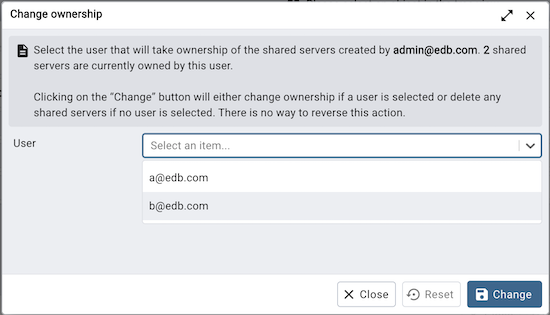
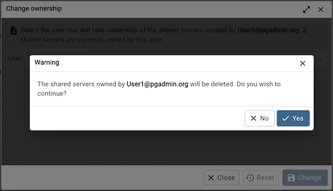

Change Ownership Dialog¶
Use the Change Ownership dialog to change the ownership of the shared servers. This dialog will appear if a user has been deleted from User Management and owned some shared servers.
Choose the user who will own the shared servers from the drop-down.
Click the Change button to change the ownership.
The shared servers owned by the user will be deleted if the user is not selected from the drop-down.
Click the Change button to change the ownership; click Close to exit the dialog.